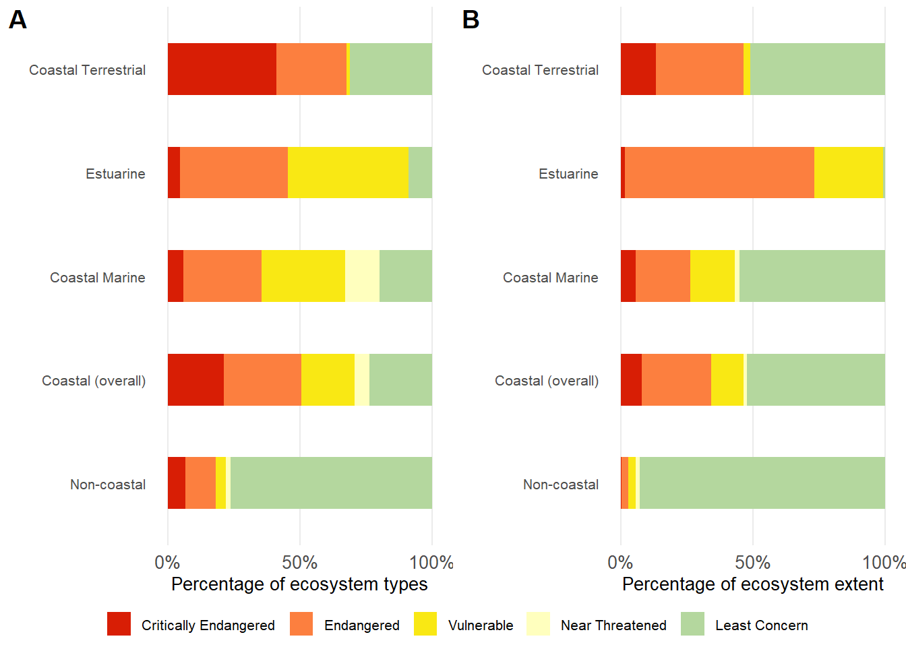
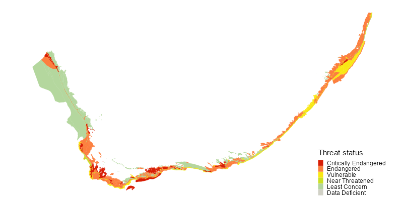

![]()

71%
of 190 ecosystem types
Threatened
of 190 ecosystem types
Threatened
3
times more
Threatened Ecosystem Types
in the coastal zone
times more
Threatened Ecosystem Types
in the coastal zone
46%
of the coast extent
Threatened
of the coast extent
Threatened
8
times more
Threatened Area
in the coastal zone
times more
Threatened Area
in the coastal zone
Introduction
Ecosystem threat status (ETS), also called ecosystem red list status, is one of the headline indicators of the National Biodiversity Assessment. It is an indicator of the degree to which ecosystems are still intact or, alternatively, losing vital aspects of their structure, function or composition.
The IUCN Red List of Ecosystems (RLE) framework uses the concept of ecosystem collapse as the end point for ecosystem decline. The framework comprises a set of quantitative and qualitative criteria (and thresholds) linked to ecosystem extent, ecological condition, and threatening processes.
Each ecosystem type is assessed according to these criteria, and is then placed into one of several categories. Collectively, ecosystem types assessed as Critically Endangered, Endangered, or Vulnerable are called ‘threatened’. Collapsed is the ecosystem equivalent of the species category, Extinct.
Collapsed (CO)
Critically Endangered (CR)
Endangered (EN)
Vulnerable (VU)
Near Threatened (NT)
Least Concern (LC)
Not Evaluated (NE)
Data deficient (DD)
For NBA 2025, the RLE framework was applied across all realms, and the results are summarised here for the 190 coastal ecosystem types that were assessed. For more details on ETS, see the general introduction to this headline indicator.
Coastal Ecosystem Threat Status
The South African coast is proportionately more threatened than the rest of the country (entire non-coastal territory combined, Figure 2, Table 1). In fact, the coast (71% threatened ecosystem types) proportionately has 3 times more threatened ecosystem types than the rest of the country (22%), which is proportionately 8 times more by extent (coastal: 46%, non-coastal: 6%). Areas where threatened ecosystem types are concentrated are around the Orange River mouth, through most of the Western Cape, in St Francis and Algoa bays, and along virtually the entire East Coast (Figure 1).

Of the 190 coastal ecosystem types in the EDCZ, 134 are threatened, comprising 40 Critically Endangered, 56 Endangered, and 38 Vulnerable ecosystem types (Figure 2, Table 1). These threatened types make up 99% of the estuarine realm, 49% of the coastal terrestrial extent, 43% of the coastal marine extent, and 46% of the overall coastal extent.
In comparison, there are 101 (22%) threatened ecosystem types that comprise 6% of the rest of the country (non-coastal land and sea). Proportionately, this means the coast has three times the number of threatened ecosystem types and almost an order of magnitude (eight times) more threatened area than the rest of the South African mainland territory (Figure 2, Table 1).
| Realm | Sub-realm | Thr | CR | EN | VU | NT | LC | Total |
|---|---|---|---|---|---|---|---|---|
| Coastal Terrestrial | Total | 57 | 34 | 22 | 1 | 0 | 26 | 83 |
| Coastal Terrestrial | Semi-coastal vegetation | 28 | 16 | 12 | 0 | 0 | 8 | 36 |
| Coastal Terrestrial | Coastal vegetation | 29 | 18 | 10 | 1 | 0 | 18 | 47 |
| Estuarine | Total | 20 | 1 | 9 | 10 | 0 | 2 | 22 |
| Coastal Marine | Total | 57 | 5 | 25 | 27 | 11 | 17 | 85 |
| Coastal Marine | Shore | 18 | 0 | 11 | 7 | 10 | 9 | 37 |
| Coastal Marine | Inner shelf and river influenced | 39 | 5 | 14 | 20 | 1 | 8 | 48 |
| Coastal (overall) | Total | 134 | 40 | 56 | 38 | 11 | 45 | 190 |
| Non-coastal | Total | 101 | 30 | 53 | 18 | 8 | 351 | 460 |
| Realm | Sub-realm | Thr | CR | EN | VU | NT | LC | Total |
|---|---|---|---|---|---|---|---|---|
| Coastal Terrestrial | Total | 68.7 | 41.0 | 26.5 | 1.2 | 0.0 | 31.3 | 100 |
| Coastal Terrestrial | Semi-coastal vegetation | 77.8 | 44.4 | 33.3 | 0.0 | 0.0 | 22.2 | 100 |
| Coastal Terrestrial | Coastal vegetation | 61.7 | 38.3 | 21.3 | 2.1 | 0.0 | 38.3 | 100 |
| Estuarine | Total | 90.9 | 4.5 | 40.9 | 45.5 | 0.0 | 9.1 | 100 |
| Coastal Marine | Total | 67.1 | 5.9 | 29.4 | 31.8 | 12.9 | 20.0 | 100 |
| Coastal Marine | Shore | 48.6 | 0.0 | 29.7 | 18.9 | 27.0 | 24.3 | 100 |
| Coastal Marine | Inner shelf and river influenced | 81.2 | 10.4 | 29.2 | 41.7 | 2.1 | 16.7 | 100 |
| Coastal (overall) | Total | 70.5 | 21.1 | 29.5 | 20.0 | 5.8 | 23.7 | 100 |
| Non-coastal | Total | 22.0 | 6.5 | 11.5 | 3.9 | 1.7 | 76.3 | 100 |
| Realm | Sub-realm | Thr | CR | EN | VU | NT | LC | Total |
|---|---|---|---|---|---|---|---|---|
| Coastal Terrestrial | Total | 49.0 | 13.2 | 33.3 | 2.5 | 0.0 | 51.0 | 100 |
| Coastal Terrestrial | Semi-coastal vegetation | 63.1 | 17.8 | 45.3 | 0.0 | 0.0 | 36.9 | 100 |
| Coastal Terrestrial | Coastal vegetation | 40.1 | 10.4 | 25.7 | 4.0 | 0.0 | 59.9 | 100 |
| Estuarine | Total | 99.1 | 1.4 | 71.7 | 26.0 | 0.0 | 0.9 | 100 |
| Coastal Marine | Total | 43.1 | 5.5 | 20.8 | 16.8 | 1.7 | 55.2 | 100 |
| Coastal Marine | Shore | 37.5 | 0.0 | 16.9 | 20.7 | 34.4 | 28.1 | 100 |
| Coastal Marine | Inner shelf and river influenced | 43.2 | 5.7 | 20.8 | 16.7 | 1.1 | 55.7 | 100 |
| Coastal (overall) | Total | 46.5 | 8.0 | 26.2 | 12.3 | 1.1 | 52.4 | 100 |
| Non-coastal | Total | 5.7 | 0.3 | 2.4 | 3.0 | 1.5 | 92.8 | 100 |
Most (34) of the 40 Critically Endangered coastal ecosystem types are within the coastal portion of the terrestrial realm (Figure 1, Figure 2, Table 1), with a slightly higher proportion of types and extent among semi-coastal vegetation types (44% of types; 17.8% of extent) than coastal vegetation types (38% of types; 10.4% of extent). This is because pressures on land act more locally and intensively than they do in the aquatic realms, often causing complete habitat loss (e.g., houses replacing grasslands) rather than degrees of degradation (e.g., different pollution levels in estuaries).
Because the data and/or assessment methodologies have changed in the realm assessments since the NBA 2018, the results are not comparable between the two assessments. However, the latest results do show that the South African coastal zone is more threatened than was previously reported.
| Realm | Subrealm | Ecosystem Type | Threat Status |
|---|---|---|---|
| Terrestrial | Coastal vegetation | Agulhas Limestone Fynbos | Critically Endangered |
| Terrestrial | Coastal vegetation | Agulhas Sand Fynbos | Critically Endangered |
| Terrestrial | Coastal vegetation | Alexander Bay Coastal Duneveld | Critically Endangered |
| Terrestrial | Coastal vegetation | Algoa Sandstone Fynbos | Critically Endangered |
| Terrestrial | Coastal vegetation | Garden Route Granite Fynbos | Critically Endangered |
| Terrestrial | Coastal vegetation | Goukamma Dune Thicket | Critically Endangered |
| Terrestrial | Coastal vegetation | Groot Brak Dune Strandveld | Critically Endangered |
| Terrestrial | Coastal vegetation | Hangklip Sand Fynbos | Critically Endangered |
| Terrestrial | Coastal vegetation | Lambert's Bay Strandveld | Critically Endangered |
| Terrestrial | Coastal vegetation | Namaqualand Seashore Vegetation | Critically Endangered |
| Terrestrial | Coastal vegetation | Namib Seashore Vegetation | Critically Endangered |
| Terrestrial | Coastal vegetation | Peninsula Granite Fynbos | Critically Endangered |
| Terrestrial | Coastal vegetation | Peninsula Shale Renosterveld | Critically Endangered |
| Terrestrial | Coastal vegetation | Potberg Sandstone Fynbos | Critically Endangered |
| Terrestrial | Coastal vegetation | Richtersveld Coastal Duneveld | Critically Endangered |
| Terrestrial | Coastal vegetation | Saldanha Granite Strandveld | Critically Endangered |
| Terrestrial | Coastal vegetation | Saldanha Limestone Strandveld | Critically Endangered |
| Terrestrial | Coastal vegetation | Southern Cape Dune Fynbos | Critically Endangered |
| Terrestrial | Semi-coastal vegetation | Cape Flats Sand Fynbos | Critically Endangered |
| Terrestrial | Semi-coastal vegetation | Cape Winelands Shale Fynbos | Critically Endangered |
| Terrestrial | Semi-coastal vegetation | Gouritz Valley Thicket | Critically Endangered |
| Terrestrial | Semi-coastal vegetation | Grootbos Strandveld | Critically Endangered |
| Terrestrial | Semi-coastal vegetation | Knysna Sand Fynbos | Critically Endangered |
| Terrestrial | Semi-coastal vegetation | Kogelberg Sandstone Fynbos | Critically Endangered |
| Terrestrial | Semi-coastal vegetation | Lourensford Alluvium Fynbos | Critically Endangered |
| Terrestrial | Semi-coastal vegetation | Mossel Bay Shale Renosterveld | Critically Endangered |
| Terrestrial | Semi-coastal vegetation | Motherwell Karroid Thicket | Critically Endangered |
| Terrestrial | Semi-coastal vegetation | Namib Lichen Fields | Critically Endangered |
| Terrestrial | Semi-coastal vegetation | Peninsula Sandstone Fynbos | Critically Endangered |
| Terrestrial | Semi-coastal vegetation | Peninsula Shale Fynbos | Critically Endangered |
| Terrestrial | Semi-coastal vegetation | Potberg Ferricrete Fynbos | Critically Endangered |
| Terrestrial | Semi-coastal vegetation | Sardinia Forest Thicket | Critically Endangered |
| Terrestrial | Semi-coastal vegetation | St Francis Strandveld | Critically Endangered |
| Terrestrial | Semi-coastal vegetation | Umtiza Forest Thicket | Critically Endangered |
| Terrestrial | Coastal vegetation | Cape Flats Dune Strandveld | Endangered |
| Terrestrial | Coastal vegetation | Hartenbos Dune Thicket | Endangered |
| Terrestrial | Coastal vegetation | KwaZulu-Natal Coastal Belt Grassland | Endangered |
| Terrestrial | Coastal vegetation | Langebaan Dune Strandveld | Endangered |
| Terrestrial | Coastal vegetation | Mangrove Forest | Endangered |
| Terrestrial | Coastal vegetation | Maputaland Coastal Belt | Endangered |
| Terrestrial | Coastal vegetation | Overberg Dune Strandveld | Endangered |
| Terrestrial | Coastal vegetation | Saldanha Flats Strandveld | Endangered |
| Terrestrial | Coastal vegetation | St Francis Dune Thicket | Endangered |
| Terrestrial | Coastal vegetation | Transkei Coastal Belt | Endangered |
| Terrestrial | Semi-coastal vegetation | Albertinia Sand Fynbos | Endangered |
| Terrestrial | Semi-coastal vegetation | Atlantis Sand Fynbos | Endangered |
| Terrestrial | Semi-coastal vegetation | Eastern Coastal Shale Band Vegetation | Endangered |
| Terrestrial | Semi-coastal vegetation | Elim Ferricrete Fynbos | Endangered |
| Terrestrial | Semi-coastal vegetation | Garden Route Shale Fynbos | Endangered |
| Terrestrial | Semi-coastal vegetation | Hopefield Sand Fynbos | Endangered |
| Terrestrial | Semi-coastal vegetation | Humansdorp Shale Renosterveld | Endangered |
| Terrestrial | Semi-coastal vegetation | Maputaland Wooded Grassland | Endangered |
| Terrestrial | Semi-coastal vegetation | Overberg Sandstone Fynbos | Endangered |
| Terrestrial | Semi-coastal vegetation | South Eastern Coastal Thornveld | Endangered |
| Terrestrial | Semi-coastal vegetation | Southeastern Strandveld | Endangered |
| Terrestrial | Semi-coastal vegetation | Southwestern Strandveld | Endangered |
| Terrestrial | Coastal vegetation | Pondoland-Ugu Sandstone Coastal Sourveld | Vulnerable |
| Terrestrial | Coastal vegetation | Canca Limestone Fynbos | Least Concern |
| Terrestrial | Coastal vegetation | Cape Seashore Vegetation | Least Concern |
| Terrestrial | Coastal vegetation | Hamburg Dune Thicket | Least Concern |
| Terrestrial | Coastal vegetation | Kasouga Dune Thicket | Least Concern |
| Terrestrial | Coastal vegetation | Namaqualand Coastal Duneveld | Least Concern |
| Terrestrial | Coastal vegetation | Namaqualand Heuweltjie Strandveld | Least Concern |
| Terrestrial | Coastal vegetation | Namaqualand Inland Duneveld | Least Concern |
| Terrestrial | Coastal vegetation | Namaqualand Sand Fynbos | Least Concern |
| Terrestrial | Coastal vegetation | Namaqualand Strandveld | Least Concern |
| Terrestrial | Coastal vegetation | Northern Coastal Forest | Least Concern |
| Terrestrial | Coastal vegetation | Northern Richtersveld Yellow Duneveld | Least Concern |
| Terrestrial | Coastal vegetation | Richtersveld Sandy Coastal Scorpionstailveld | Least Concern |
| Terrestrial | Coastal vegetation | Southern Coastal Forest | Least Concern |
| Terrestrial | Coastal vegetation | Southern Richtersveld Yellow Duneveld | Least Concern |
| Terrestrial | Coastal vegetation | Subtropical Dune Thicket | Least Concern |
| Terrestrial | Coastal vegetation | Subtropical Seashore Vegetation | Least Concern |
| Terrestrial | Coastal vegetation | Swamp Forest | Least Concern |
| Terrestrial | Coastal vegetation | Western Gariep Plains Desert | Least Concern |
| Terrestrial | Semi-coastal vegetation | Albany Mesic Thicket | Least Concern |
| Terrestrial | Semi-coastal vegetation | Bethelsdorp Bontveld | Least Concern |
| Terrestrial | Semi-coastal vegetation | De Hoop Limestone Fynbos | Least Concern |
| Terrestrial | Semi-coastal vegetation | Elands Forest Thicket | Least Concern |
| Terrestrial | Semi-coastal vegetation | Goukamma Strandveld | Least Concern |
| Terrestrial | Semi-coastal vegetation | Grassridge Bontveld | Least Concern |
| Terrestrial | Semi-coastal vegetation | Southern Afrotemperate Forest | Least Concern |
| Terrestrial | Semi-coastal vegetation | Tsitsikamma Sandstone Fynbos | Least Concern |
| Estuarine | Estuaries | Subtropical Estuarine Bay | Critically Endangered |
| Estuarine | Estuaries | Cool Temperate Arid Predominantly Closed | Endangered |
| Estuarine | Estuaries | Cool Temperate Estuarine Lagoon | Endangered |
| Estuarine | Estuaries | Cool Temperate Estuarine Lake | Endangered |
| Estuarine | Estuaries | Cool Temperate Large Fluvially Dominated | Endangered |
| Estuarine | Estuaries | Cool Temperate Large Temporarily Closed | Endangered |
| Estuarine | Estuaries | Cool Temperate Predominantly Open | Endangered |
| Estuarine | Estuaries | Subtropical Estuarine Lake | Endangered |
| Estuarine | Estuaries | Subtropical Large Fluvially Dominated | Endangered |
| Estuarine | Estuaries | Warm Temperate Estuarine Lake | Endangered |
| Estuarine | Estuaries | Cool Temperate Small Fluvially Dominated | Vulnerable |
| Estuarine | Estuaries | Cool Temperate Small Temporarily Closed | Vulnerable |
| Estuarine | Estuaries | Subtropical Large Temporarily Closed | Vulnerable |
| Estuarine | Estuaries | Subtropical Predominantly Open | Vulnerable |
| Estuarine | Estuaries | Subtropical Small Temporarily Closed | Vulnerable |
| Estuarine | Estuaries | Tropical Estuarine Lake | Vulnerable |
| Estuarine | Estuaries | Warm Temperate Estuarine Bay | Vulnerable |
| Estuarine | Estuaries | Warm Temperate Large Fluvially Dominated | Vulnerable |
| Estuarine | Estuaries | Warm Temperate Large Temporarily Closed | Vulnerable |
| Estuarine | Estuaries | Warm Temperate Predominantly Open | Vulnerable |
| Estuarine | Estuaries | Warm Temperate Small Fluvially Dominated | Least Concern |
| Estuarine | Estuaries | Warm Temperate Small Temporarily Closed | Least Concern |
| Marine | Inner shelf and river influenced | Agulhas Muddy Mid Shelf | Critically Endangered |
| Marine | Inner shelf and river influenced | Aliwal Shoal Reef Complex | Critically Endangered |
| Marine | Inner shelf and river influenced | Cape Bay | Critically Endangered |
| Marine | Inner shelf and river influenced | KZN Bight Muddy Inner Shelf | Critically Endangered |
| Marine | Inner shelf and river influenced | Orange Cone Inner Shelf Mud Reef Mosaic | Critically Endangered |
| Marine | Inner shelf and river influenced | Durnford Inner Shelf Reef Complex | Endangered |
| Marine | Inner shelf and river influenced | Eastern Agulhas Bay | Endangered |
| Marine | Inner shelf and river influenced | False and Walker Bay | Endangered |
| Marine | Inner shelf and river influenced | KZN Bight Deep Shelf Edge | Endangered |
| Marine | Inner shelf and river influenced | KZN Bight Mid Shelf Mosaic | Endangered |
| Marine | Inner shelf and river influenced | KZN Bight Mid Shelf Reef Complex | Endangered |
| Marine | Inner shelf and river influenced | KZN Bight Sandy Inner Shelf | Endangered |
| Marine | Inner shelf and river influenced | Kei Fluvial Fan | Endangered |
| Marine | Inner shelf and river influenced | Kei Reef Mosaic | Endangered |
| Marine | Inner shelf and river influenced | Orange Cone Muddy Mid Shelf | Endangered |
| Marine | Inner shelf and river influenced | Southern KZN Inner Shelf Mosaic | Endangered |
| Marine | Inner shelf and river influenced | St Helena Bay | Endangered |
| Marine | Inner shelf and river influenced | Trafalgar Reef Complex | Endangered |
| Marine | Inner shelf and river influenced | Western Agulhas Bay | Endangered |
| Marine | Shore | Agulhas Reflective Sandy Shore | Endangered |
| Marine | Shore | Agulhas Sheltered Rocky Shore | Endangered |
| Marine | Shore | Cape Island | Endangered |
| Marine | Shore | Cape Mixed Shore | Endangered |
| Marine | Shore | Cape Sheltered Rocky Shore | Endangered |
| Marine | Shore | Namaqua Exposed Rocky Shore | Endangered |
| Marine | Shore | Namaqua Mixed Shore | Endangered |
| Marine | Shore | Namaqua Sheltered Rocky Shore | Endangered |
| Marine | Shore | Namaqua Very Exposed Rocky Shore | Endangered |
| Marine | Shore | Natal Delagoa Reflective Sandy Shore | Endangered |
| Marine | Shore | Southern Benguela Reflective Sandy Shore | Endangered |
| Marine | Inner shelf and river influenced | Agulhas Inner Shelf Mosaic | Vulnerable |
| Marine | Inner shelf and river influenced | Agulhas Kelp Forest | Vulnerable |
| Marine | Inner shelf and river influenced | Agulhas Sandy Inner Shelf | Vulnerable |
| Marine | Inner shelf and river influenced | Cape Kelp Forest | Vulnerable |
| Marine | Inner shelf and river influenced | Cape Rocky Inner Shelf | Vulnerable |
| Marine | Inner shelf and river influenced | Durnford Mid Shelf Reef Complex | Vulnerable |
| Marine | Inner shelf and river influenced | KZN Bight Muddy Shelf Edge | Vulnerable |
| Marine | Inner shelf and river influenced | KZN Bight Outer Shelf Mosaic | Vulnerable |
| Marine | Inner shelf and river influenced | Kosi Coral Community | Vulnerable |
| Marine | Inner shelf and river influenced | Leadsman Coral Community | Vulnerable |
| Marine | Inner shelf and river influenced | Namaqua Kelp Forest | Vulnerable |
| Marine | Inner shelf and river influenced | Port St Johns Inner Shelf Mosaic | Vulnerable |
| Marine | Inner shelf and river influenced | Port St Johns Muddy Mid Shelf | Vulnerable |
| Marine | Inner shelf and river influenced | Port St Johns Muddy Shelf Edge | Vulnerable |
| Marine | Inner shelf and river influenced | Sodwana Coral Community | Vulnerable |
| Marine | Inner shelf and river influenced | St Lucia Sandy Mid Shelf | Vulnerable |
| Marine | Inner shelf and river influenced | Wild Coast Inner Shelf Mosaic | Vulnerable |
| Marine | Inner shelf and river influenced | uThukela Mid Shelf Mosaic | Vulnerable |
| Marine | Inner shelf and river influenced | uThukela Mid Shelf Mud Coarse Sediment Mosaic | Vulnerable |
| Marine | Inner shelf and river influenced | uThukela Outer Shelf Muddy Reef Mosaic | Vulnerable |
| Marine | Shore | Agulhas Exposed Rocky Shore | Vulnerable |
| Marine | Shore | Agulhas Island | Vulnerable |
| Marine | Shore | Agulhas Stromatolite Mixed Shore | Vulnerable |
| Marine | Shore | Cape Boulder Shore | Vulnerable |
| Marine | Shore | Cape Exposed Rocky Shore | Vulnerable |
| Marine | Shore | Natal Boulder Shore | Vulnerable |
| Marine | Shore | Natal Mixed Shore | Vulnerable |
| Marine | Inner shelf and river influenced | Cape Sandy Inner Shelf | Near Threatened |
| Marine | Shore | Agulhas Boulder Shore | Near Threatened |
| Marine | Shore | Agulhas Dissipative Sandy Shore | Near Threatened |
| Marine | Shore | Agulhas Exposed Stromatolite Rocky Shore | Near Threatened |
| Marine | Shore | Agulhas Mixed Shore | Near Threatened |
| Marine | Shore | Agulhas Very Exposed Stromatolite Rocky Shore | Near Threatened |
| Marine | Shore | Natal Delagoa Dissipative Sandy Shore | Near Threatened |
| Marine | Shore | Natal Delagoa Intermediate Sandy Shore | Near Threatened |
| Marine | Shore | Natal Exposed Rocky Shore | Near Threatened |
| Marine | Shore | Natal Very Exposed Rocky Shore | Near Threatened |
| Marine | Shore | Southern Benguela Intermediate Sandy Shore | Near Threatened |
| Marine | Inner shelf and river influenced | Agulhas Inner Shelf Reef | Least Concern |
| Marine | Inner shelf and river influenced | Delagoa Sandy Inner Shelf | Least Concern |
| Marine | Inner shelf and river influenced | Namaqua Mid Shelf Fossils | Least Concern |
| Marine | Inner shelf and river influenced | Namaqua Muddy Mid Shelf Mosaic | Least Concern |
| Marine | Inner shelf and river influenced | Namaqua Muddy Sands | Least Concern |
| Marine | Inner shelf and river influenced | Namaqua Sandy Inner Shelf | Least Concern |
| Marine | Inner shelf and river influenced | Namaqua Sandy Mid Shelf | Least Concern |
| Marine | Inner shelf and river influenced | St Lucia Sandy Inner Shelf | Least Concern |
| Marine | Shore | Agulhas Dissipative Intermediate Sandy Shore | Least Concern |
| Marine | Shore | Agulhas Intermediate Sandy Shore | Least Concern |
| Marine | Shore | Agulhas Very Exposed Rocky Shore | Least Concern |
| Marine | Shore | Cape Very Exposed Rocky Shore | Least Concern |
| Marine | Shore | Delagoa Mixed Shore | Least Concern |
| Marine | Shore | Delagoa Very Exposed Rocky Shore | Least Concern |
| Marine | Shore | Natal Delagoa Dissipative Intermediate Sandy Shore | Least Concern |
| Marine | Shore | Southern Benguela Dissipative Intermediate Sandy Shore | Least Concern |
| Marine | Shore | Southern Benguela Dissipative Sandy Shore | Least Concern |
Technical documentation
Github repositories
Coastal synthesis: https://github.com/lrharris/nba2025_coast/
Terrestrial RLE assessment: https://github.com/askowno/RLE_terr
Estuarine RLE assessment: https://github.com/askowno/RLE_est
Marine RLE assessment: https://gitlab.com/nba_2025/ecosystem_assessment/threat_status
Data availability
The following datasets are available for download:
Recommended citation
Harris, L.R., Besseling, N., Sink, K.J., Skowno, A.L., & Van Niekerk, L. 2025. Ecosystem Threat Status. National Biodiversity Assessment 2025. South African National Biodiversity Institute. http://nba.sanbi.org.za/.